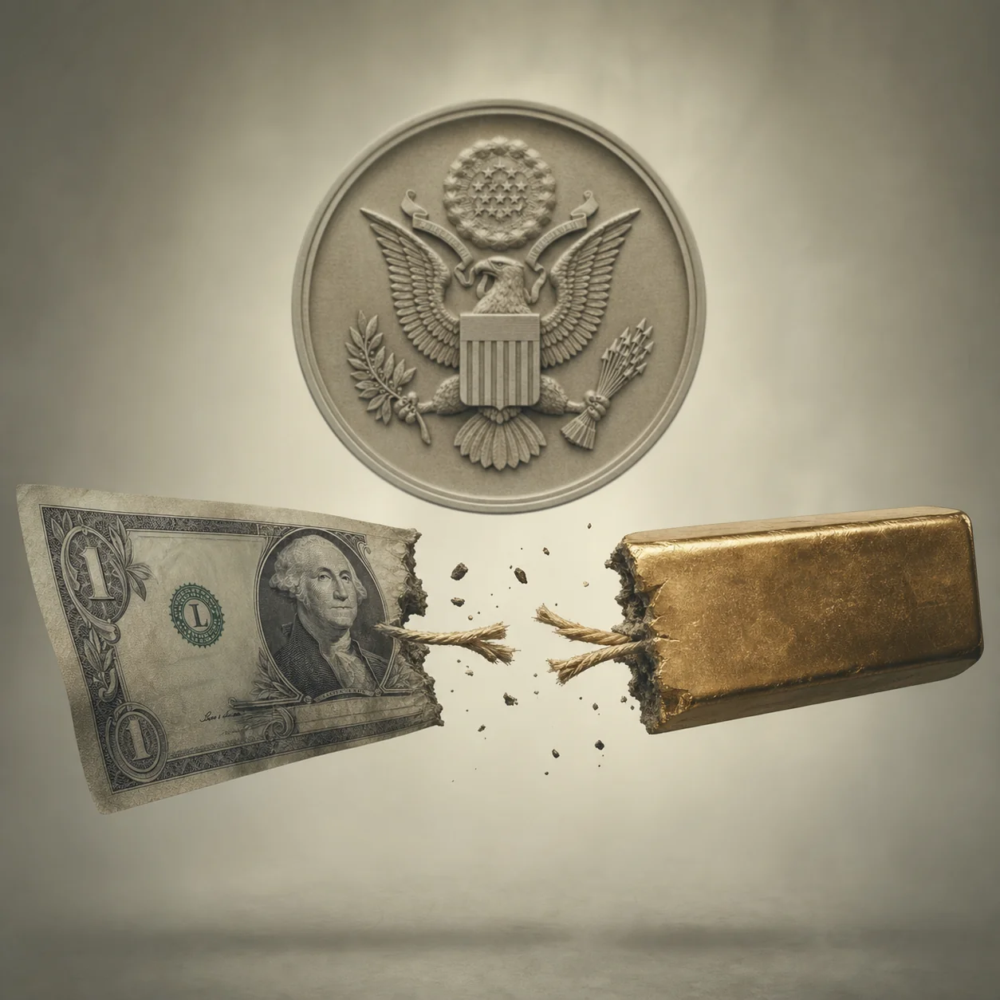

ดอลลาร์เริ่มหมุนเวียนมากขึ้น นานาชาติเริ่มสงสัย
ว่าสหรัฐฯ มีทองคำสำรองพอจริงหรือไม่
บางประเทศเริ่มขอแลกดอลลาร์กลับเป็นทอง รัฐบาลสหรัฐฯ
เผชิญการแห่ถอนทองระดับโลก พวกเขามีทองคำไม่พอจะให้
ทุกประเทศแลกคืนตามที่สัญญาไว้
ปี 1971 ประธานาธิบดีนิกสันประกาศ
ยกเลิกการให้แลกคืนดอลลาร์เป็นทองคำ
มาตรการนี้ถูกประกาศว่าเป็นมาตรการชั่วคราว แต่จนถึงปัจจุบัน (มากกว่า 50 ปี) ดอลลาร์ยังคงไม่สามารถแลกคืนเป็นทองคำจากรัฐบาลสหรัฐฯ ได้ ราคาทองคำลอยตัวออกจากค่าเงินดอลลาร์นับแต่นั้น
